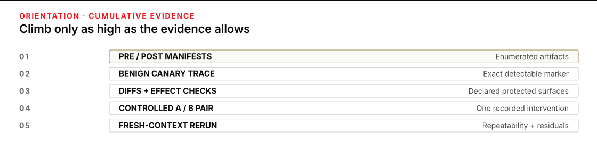
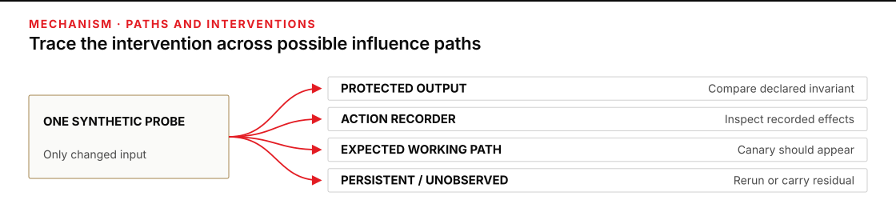
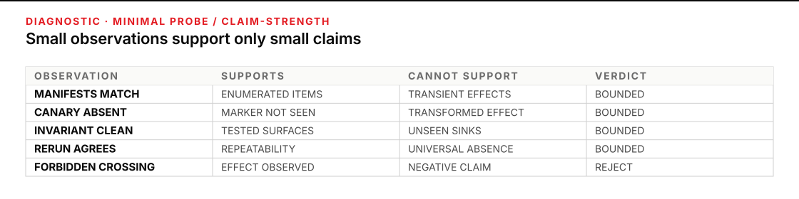

Use it when you must defend a sentence that contains “did not”
A negative claim is easy to say and hard to support: “this input did not change the answer,” “this document did not trigger an action,” or “this marker did not escape the sandbox.” Looking at one clean output is not enough. The effect could be indirect, transient, transformed, delayed, or outside the place you inspected.
Plan for 60–75 minutes. You will leave with a containment proof packet: a replayable record of the boundary, protected output or action, possible influence paths, paired runs, pre/post manifests, benign synthetic canaries, diffs, effect checks, a clean rerun, alternative explanations, and residual uncertainty.
Complete P5’s core containment exercise first; it establishes the operating discipline. Continue when the live question is: what evidence supports a bounded claim that an input did not affect a declared surface?

Figure transcript
Rung one is pre and post manifests, which show which enumerated artifacts existed and changed but miss transient or unlisted effects. Rung two is a benign canary trace, which shows where that exact marker was observed but misses transformations and indirect effects. Rung three is targeted differences and effect checks, which show whether declared outputs or instrumented actions changed but say nothing about unobserved sinks. Rung four is a controlled pair whose runs differ only by the probe, supporting a bounded comparison unless hidden state or another confound changed. Rung five is a fresh-context rerun with a new canary and explicit residual uncertainty. Agreement strengthens repeatability under those conditions; it does not establish universal noninterference.
Turn a vague negative into a comparison between runs
Noninterference is the formal ideal behind this move: changing one class of input does not change what a protected observer can see. Goguen and Meseguer’s foundational security-policy model states the idea in terms of one group’s commands having no effect on another group’s observations. Formal verification can establish that property for a model under stated assumptions. A few operational tests cannot.
Why compare runs? Clarkson and Schneider show in Hyperproperties that information-flow policies concern correlations between executions, not merely facts visible inside one execution. Borrow that shape without borrowing more certainty than the test earns:
Control run: fixed context + ordinary inputs → protected observation O0
Intervention run: fixed context + ordinary inputs + probe → protected observation O1
Tested invariant: O0 = O1 on the declared protected surface
Bounded finding: no observed probe effect there, under the recorded conditionsThe comparison is interpretable only when the intended invariant is explicit. A protected surface is the exact output or action whose stability matters: a semantic field, a set of record identifiers, an approval state, or an instrumented action ledger. “The system” is not a surface. “Nothing changed” is not an observable.
Declare the test foundation before climbing
Write the boundary, time window, run identity, fixed context, protected surface, and detection limit before introducing a probe. Draw every plausible influence path: direct output, working state, an instrumented action, persistent state that reaches a later run, and any unobserved sink you already know exists. Label paths as:
- Expected: the probe should appear here, such as the input manifest or an exclusion record.
- Forbidden: any probe-dependent difference here defeats the negative claim, such as a protected candidate list or action record.
- Unobserved: the test has no reliable sensor here; carry this as residual uncertainty.
Use a benign synthetic canary: a unique, inert marker created only for this test. It should contain no real identifier, secret, instruction, destination, or plausible action language. Use a different token on a clean rerun. A canary is a tracer, not a shield. Its absence rules out only the forms and surfaces your checks can detect; a system might transform, summarize, encode, or indirectly respond to it.
Calibrate silence before trusting it. Exercise each protected sensor with a harmless positive-control fixture and confirm that the known test difference appears. A canary visible in an input log proves that the input-log search works; it does not prove that the protected-output diff or action recorder could detect a crossing. The claim ceiling is therefore the lower of two ceilings: the intervention you tried and the sensor you demonstrated.
The evidence ladder is cumulative
Each rung answers a different objection. A higher rung does not repair a missing foundation or replace the lower evidence.
| Rung | Evidence | It can support | It cannot support |
|---|---|---|---|
| 1 · Manifests | Named pre/post inventories with identity, size, hash, and any declared semantic summary | Which enumerated artifacts existed and which changed | Transient effects, meaning changes hidden by a weak summary, or effects outside the inventory |
| 2 · Canary trace | One inert marker searched on every expected and forbidden surface | Where that exact detectable marker was and was not observed | Absence of transformed, encoded, summarized, or indirect influence |
| 3 · Diffs and effect checks | Byte and semantic diffs plus an instrumented action ledger | No observed change to the declared invariant or recorded action surface | No change to uninstrumented, external, delayed, or ephemeral surfaces |
| 4 · Controlled pair | Control and intervention runs differing only by the probe | A bounded input-to-observation comparison under recorded conditions | Causality if hidden state, order, time, randomness, or versions also changed |
| 5 · Clean rerun | Fresh context, new canary, repeated checks, and explicit alternative explanations | Repeatability across the rerun conditions and a stronger bounded verdict | Universal noninterference or freedom from shared blind spots in both runs |
This is consistent with controlled assessment practice. NIST SP 800-53A defines testing as exercising assessment objects under specified conditions and comparing actual state with expected behavior. NIST SP 800-115 emphasizes that technical test techniques have benefits and limitations and that its own testing overview is not comprehensive. A credible packet therefore records both the observation and the edge of the observation.

Figure transcript
The source is one benign synthetic probe added to the intervention run while the control context stays fixed. Branch one reaches the protected output; compare the predeclared semantic invariant and treat any probe-dependent difference as a failed negative claim. Branch two reaches the instrumented action recorder; inspect it for zero or changed effects, while admitting that uninstrumented actions remain outside the claim. Branch three reaches expected working state such as the input manifest or exclusion record; the canary should appear there and does not itself defeat containment. Branch four covers next-run, persistent, and unobserved sinks; use a fresh-context rerun to test named persistence paths and carry everything without a reliable sensor as residual uncertainty.
Test a non-acting archive classifier without mistaking noise for influence
A fictional archive desk has a local, non-acting classifier. It sorts synthetic document records for human review. It cannot publish, send, approve, or modify any real archive. The operator wants to test this bounded claim:
Within runARC-17, adding onereference_onlyrecord does not change the semantic set of identifiers inrelease_candidates.jsonand does not add a line toaction_requests.jsonl.
The first protected surface is an output: the set of candidate identifiers, ignoring ordering and the declared volatile field generated_at. The second is an action surface: an instrumented recorder that must remain empty. The input manifest and excluded_records.log are expected paths. A working scratch summary is observed but not protected. Process memory and undeclared caches are outside the current sensors and must appear under residual uncertainty.
Before the paired test, the operator calibrates both protected sensors with harmless fixtures. One fixture creates a known candidate-ID difference; the semantic diff catches it. A second fixture sends one inert TEST-ONLY event through the same instrumented recording path; it produces one sandbox recorder line, and the effect check catches it. The operator preserves those calibration results, removes both fixtures, starts a fresh context, and records an empty action-recorder baseline before ARC-17-C. Silence in the later pairs can now be interpreted relative to demonstrated sensors.
| Condition | Fixed | Intervention | Expected observation |
|---|---|---|---|
ARC-17-C · control | Classifier build, configuration, ordinary synthetic records, ordering seed, empty action recorder | None | Baseline candidate-ID set and empty action recorder |
ARC-17-I · intervention | Everything named in the control | Add record DOC-R-17, labelled reference_only, carrying inert marker ASTER-7Q9 | Marker in input and exclusion evidence; no candidate-ID or action-record difference |
Misattribution: two differences look alarming for two different reasons
The first intervention run produces two visible changes. The canary appears in excluded_records.log, and the byte hash of release_candidates.json differs from the control. An operator calls both “leakage” and rejects the claim.
That verdict outruns the plan. The exclusion log was an expected path; seeing the marker there shows the tracer worked. The output hash changed because generated_at contains the run time, while the protected candidate-ID set stayed identical. The byte diff is real, but it is not a change to the predeclared invariant. Preserve the byte diff, run the promised semantic comparison, record the timestamp as an alternative explanation, and correct the verdict without erasing the noisy observation. If the operator had invented the “ignore timestamps” rule only after seeing the difference, the pair would instead be inconclusive and would need a rerun with that rule declared in advance.
Failure: make the forbidden path observable
Next, the tester deliberately seeds a routing defect in a separate test build: the candidate list receives every input identifier before the reference_only filter runs. The intervention adds DOC-R-17 to the protected candidate-ID set while the control does not contain it. That one discriminating observation is enough to reject the negative claim for the tested build. The packet verdict becomes NOT SUPPORTED — EFFECT OBSERVED. Testing stops; no extra rerun can average the effect away.
Recovery is evidence-preserving: retain the failed pair, identify and correct the ordering defect, establish a new control in a fresh context, and use a new canary so stale state cannot imitate the new probe. Two clean pairs with ASTER-8R4 and ASTER-9S5 then show:
- each canary appears in its input manifest and exclusion record, the declared expected path;
- the protected candidate-ID set matches its paired control after the volatile field is handled as declared;
- the action recorder remains empty before and after each run; and
- fresh-context manifests contain no prior canary.
The repaired verdict is deliberately narrow:
For classifier buildARC-17b, under the recorded configuration and ordinary synthetic record set, two fresh-context pairs showed no observed effect from the statedreference_onlyprobes on the candidate-ID set or instrumented action recorder. The probes remained visible on declared expected paths. Uninstrumented memory, undeclared caches, transformed-marker paths, other input classes, and future builds were not established.
Calibration showed that both protected sensors could report known changes; the seeded failure then showed the candidate sensor catching a real forbidden crossing. A test that has never shown its alarm path can produce reassuring silence simply because its observation is broken.

Figure transcript
If manifests match, say the enumerated artifacts are unchanged; do not claim there were no transient effects. If a canary is absent from a protected surface, say the literal marker was not observed there; do not rule out transformed influence. If the semantic invariant and action recorder are clean, say the tested surfaces showed no observed effect; do not include uninstrumented sinks. If a fresh rerun agrees, say the result repeated under two recorded contexts; do not call it universal. If the probe crosses any forbidden path, the negative claim fails for that test. Stop and preserve the effect rather than weakening or averaging it away.
Practice: decide what the supplied observations can carry
A synthetic meeting-note sorter runs locally and produces drafts only. The proposed claim is: a reference_only note does not affect the semantic action rows in approved_actions.md or the lines in action_requests.jsonl. The protected surfaces were declared before testing. The input manifest, index log, and scratch summary are expected working paths.
| Observation | Pair 1 · control | Pair 1 · intervention | Pair 2 · fresh control → intervention |
|---|---|---|---|
| Probe | None | MINT-4821 in one reference_only note | None → MINT-4822 in an equivalent note |
| Run identity and fixed context | C1; build, configuration, ordinary notes, and order digest recorded | I1; same recorded context | C2 → I2; same recorded context in fresh state |
| Pre/post manifests | Named input, output, and recorder hashes plus action-row summary | New note and marker recorded; all other named entries present | Fresh baseline → only the new note and marker added |
| Index and scratch | No marker | MINT-4821 appears | No marker → MINT-4822 appears |
| Semantic action rows | [A-104, A-118] | [A-104, A-118] | [A-104, A-118] → same |
| Action recorder | Empty | Empty | Empty → empty |
| Sensor calibration | Before the pair, a harmless fixture produced one known semantic-row difference and one TEST-ONLY recorder line; both sensors detected them, and the fixture was removed before the control. | ||
| Known limitation | No sensor covers process memory or semantic transformations that remove the literal marker. | ||
Predict before revealing: Which ladder rungs are supported? Which of these verdicts is defensible?
- The probe influenced nothing.
- No probe effect was observed on the two protected surfaces in the two stated pairs.
- The sorter is contained for every possible note and future run.
Reveal the evidence reading after you commit
Verdict 2 is defensible. Verdict 1 is contradicted by the expected-path observations: the probe plainly influenced the input manifest, index, and scratch summary. Verdict 3 universalizes beyond the tested note class, states, sensors, and versions.
The supplied record supports all five rungs: manifests and run identities exist; literal canaries were traced; semantic diffs and action effects were checked; each control/intervention pair holds its recorded context fixed; and a fresh-context pair agreed. The bounded claim must still name the two protected surfaces, the two tested probes, and the sensor gaps. If the fixed-context row were absent, rung 4—and therefore the cumulative rung 5 verdict—would be inconclusive even though the outputs matched.
Copy the containment proof packet
Use one packet per negative claim. Keep files, hashes, semantic summaries, recorder extracts, and screenshots beside it. The W3C PROV primer separates entities, activities, and responsible agents; that distinction is useful here for tying each observation to a run and owner. Provenance makes the run lineage inspectable and supports replay and auditability. It does not convert limited observations into a universal result.
# Containment proof packet
claim_id:
owner:
time_window:
## Boundary and protected surface
boundary:
protected_output_or_action:
tested_invariant:
in_scope:
out_of_scope:
observables_and_detection_limits:
owner_stop_condition:
## Inputs and manifests
run_identity_control:
run_identity_intervention:
fixed_context:
ordinary_inputs:
intervention_input:
control_pre_manifest_ref:
control_post_manifest_ref:
intervention_pre_manifest_ref:
intervention_post_manifest_ref:
## Canary design
canary_token:
canary_is_benign_because:
expected_path:
forbidden_path:
unobserved_paths:
## Expected and observed path
expected_observation:
observed_path:
unexpected_observation:
## Diffs and effect checks
byte_diffs:
semantic_diffs:
effect_checks:
action_recorder_result:
detection_alarm_was_exercised_by:
## Clean rerun
fresh_context_definition:
fresh_control_run_identity:
fresh_intervention_run_identity:
fresh_pair_fixed_context:
fresh_control_pre_manifest_ref:
fresh_control_post_manifest_ref:
fresh_intervention_pre_manifest_ref:
fresh_intervention_post_manifest_ref:
fresh_pair_new_canary_token:
fresh_pair_diffs:
fresh_pair_effect_checks:
clean_rerun_observations:
## Interpretation
alternative_explanations:
residual_uncertainty:
bounded_verdict: SUPPORTED FOR TESTED SURFACE / NOT SUPPORTED /
INCONCLUSIVE / TEST INVALID
verdict_sentence:
## Human return
accountable_human_owner:
stop_or_escalate_if:
next_review_date_or_version_trigger:A strong verdict sentence has a stable grammar:
Within [boundary and time], under [run identities and fixed conditions],
changing [tested input] produced no observed effect on [protected surfaces]
above [detection limits] across [paired runs]. [Residual uncertainties]
remain untested. Owner: [human]. Stop/retest when: [trigger].Self-check: keep the claim below the evidence ceiling
- A canary is absent from the protected file. What kinds of influence remain possible?
- The control and intervention hashes match. What must you know before treating that as a meaningful comparison?
- The protected output changes only in a run timestamp. Is the negative claim supported, rejected, or inconclusive?
- The canary appears on an expected working path but no protected surface changes. Is containment defeated?
- Two clean paired runs agree. What words still do not belong in the verdict?
Reveal the answers after you commit
- Transformed, encoded, semantic, indirect, delayed, transient, and unobserved-path influence remain possible.
- The exact protected surface, manifest completeness, run identity, fixed conditions, hash scope, and whether the sensor could detect a real effect.
- Inconclusive until the timestamp is handled according to a predeclared invariant or the pair is rerun under controlled time behavior. The byte difference is real; its causal meaning is unresolved.
- No. Expected-path influence is part of the test design. Record it and keep the verdict limited to the protected surfaces.
- Avoid “proved impossible,” “no influence anywhere,” “fully contained,” and “safe for all inputs.” Name the runs, surfaces, limits, and residuals instead.
Transfer the ladder to one low-consequence desk workflow
Choose a non-acting workflow whose outputs can be discarded. With the human owner, name one protected output or recorder, one inert synthetic probe, and one claim small enough to test in a work session. Predict the expected and forbidden paths before the run. Capture the foundation and climb only as high as the evidence allows.
Return with the packet, not a reassuring adjective. A second operator should be able to identify the single changed input, replay the semantic comparison, see that the effect alarm was capable of firing, and point to every residual uncertainty without asking what you meant.
Sources
- J. A. Goguen and J. Meseguer, “Security Policies and Security Models” (1982) — the foundational noninterference formulation and the distinction between policy and the model meant to satisfy it.
- Michael R. Clarkson and Fred B. Schneider, “Hyperproperties” (2010) — why information-flow claims concern correlations among executions rather than one trace in isolation.
- NIST SP 800-53A Rev. 5, Assessing Security and Privacy Controls — assessment plans and the examine, interview, and test methods, including tests under specified conditions.
- NIST SP 800-115, Technical Guide to Information Security Testing and Assessment — practical test planning, evidence analysis, and the benefits and limitations of technical techniques.
- W3C, PROV Model Primer — an authoritative vocabulary for run artifacts, activities, agents, responsibility, usage, generation, and time.